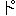
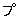

| 学問ある蛙の話 | |
| 知里 真志保 | |
| 青空文庫 (2013) | |
学問ある蛙の話
知里真志保
桃太郎の昔話をアイヌ語研究の先輩連に語らせるときっと面白いことになるだろうと思う。昔々、爺さんと婆さんがあった、爺さんがある日川へ洗濯に行った（註１あいにく婆さんはその日病気で動けなかったのである）すると川の下の方から大きな桃が流れて来た（註２これは誤植ではない。丁度その時満潮で川の水が逆流していたのである）まず、ざっとこんなぐあいになるかと思う。話がともすれば理屈に合わなくなる。するとそのつじつまを合わせるためにいかにも尤もらしい説明を加えたがる。それがこの人達の特徴である。その好い（？）例の一つが、次に述べるホロカの附く地名の解釈である。
アイヌ語にホロカという語があり、バチラー辞書はこれを副詞として「後方へ向って」という解釈しか示していないが、本来は動詞であって「後へ戻る」という意味である。この語が形容詞として川の名を構成し、殆ど全道に亘って分布している。今ちょっと手許にある永田方正の『北海道蝦夷語地名解』（第四版）に当ってみるだけでも、次のように数多く見出される。（地名の解釈も永田氏による。）
▶石狩国上川郡 ホロカイシカリ（逆流ノ渦川）
▶石狩国樺戸郡 ホロカ ク（却流川）ポンホロカ ク（却流ノ小川）ホロポロカ ク（却流ノ大川）
▶石狩国雨龍郡 ホロカナイ（却流川）
▶石狩国空知郡 ホロカアシュペッ（却流ノ立川）
▶石狩国夕張郡 ホロカユーパロ（却流ノ湯口川）シーホロカペツ（却流川登川村の原名）
▶石狩国厚田郡 ホロカシュオ （却流ノ箱川）ホロカアーラ（却流ノ蜥蜴川）
▶後志国余市郡 ホロカイオチ（逆流ノ蛇川）
▶後志国古平町 ホロカフーレピライ（却流ノ赤崖）
▶渡島国松前郡 ホロカナイ（却流川）
▶渡島国茅部郡 ホリカペッ（逆流川、和名サカサ川）
▶胆振国山越郡 ホロカユーラ （却流ノ温泉川）
▶胆振国虻田郡 ホロカペッ（却流川）ホロカヌプキペッ（却流川）
▶日高国新冠郡 ホロカウンペッ（却流川）ホロカピポク（却流ノ岩陰川）
▶十勝国河西郡 ホロカレウケ（逆流ノ曲リ川）
▶天塩国上川郡 ホロカナヨロ（却流ノ谷川）
▶北見国紋別郡 ホルカモペッ（逆流ノ静川）
これらのホロカを永田氏は一つの例外もなしに水が後戻りするものと考え、「逆流の」「却流の」という訳語でかたづけている。つまり桃を川下から流したのである。そこでそれを合理化する為には、どうしても満潮の理論を持出して来なくてはならなかった。渡島国松前郡のホロカナイを却流川と訳し、更にそれに註して「潮入リテ河水却流ス、故ニ名ク」と書いている。ところが、あいにくなことには、これらのホロカは、いかに満潮でも到底河水が逆流すべくもないような山奥にも分布しているので、そこへ行くと却流川という解釈はいやでも後戻りせざるを得なくなるのである。ホロカは、実は水が後戻りするのでなくて、人が後戻りするのである。それはどういう地形かと云うと、川の流れがほぼＮ字形に回流している部分をさすのである（実際はＮの上下の角がもっと円味を帯びている）。ではどういうわけでそのような地形に於て人が後戻りしなければならないかと云うと、それを理解するためには、先ず川というものに対するアイヌの考え方を知っておく必要がある。
我々の考え方では、川は山から発して海に入るものであるが、アイヌは、それとは全く反対に、海から入って山へ行くものと考えている。地名のオマンペッ（山奥へ行く川）シノマンペッ（ずうっと山奥へ行く川）リコマンペッ（高く登って行く川）などはそういう考え方を示している。また我々が川の出発点と考えて「水源」「みなもと」と名づけているものを、アイヌは川の帰着点と考えてペテトㇰすなわち「川の行く先」あるいはペッキタイ「川の頭のてっぺん」と名づけている。また我々が二つの川の合流する所を落合と名づけているのに対して、アイヌはペトコピすなわち「川が別れて行く所」と名づけているのも、同じ考え方に基づくものである。もともとアイヌは海岸線に沿って所々に部落をつくっていた。そして内陸への交通は主として川によったのである。部落のそばを流れる川沿いにさかのぼって鮭鱒をとったり、熊や鹿を捕ったりして暮らしていたところから、そういう生活に即して川はさかのぼって山へ行くものという考え方が自然に生れて来たのであろう。そこでホロカの問題に戻るのであるが、川沿いに登って行くとＮ字型の地形に於てはその上方の一角に達した時どうしても一旦後戻りせざるを得ないわけで、さてこそホロカという語の意味が生きてくるのである。
この例をもう一つ、今度はアイヌ語研究の世界的権威と目されるバチェラー博士の辞書から引いてみる。アイヌの食品ルイペを称して、鮭を凍らして生で食べるものであり、北海道北部の海岸地帯では現に和人もルイペと称してこれを賞味している。バチェラー博士の辞書はこれに対して「凍魚」という訳語を与えているのみである。事実凍魚にはちがいないけれども、食べる時は皮を火にあぶって塩をつけて食う。口の中に入れるととけてしまうので、アイヌはそれを「とける魚」と考えている。アイヌ語ルは「とける」イペは「魚」であるから、アイヌ語の心理に即して云えば「凍魚」ではなく「融魚」なのである。
アイヌは氷のことをル
と言う、これも語源は「とけるもの」の義である。氷は日本語ではコオルという動詞から出て「コオルモノ」の義からコオリと名詞になったものと思われる。すなわち、そこでは水を常態と考えて、それから氷に変化して行く過程に名づけたのである。アイヌの場合は反対に、氷を常態と観じて、それが融けて行く過程を注目し、融けるものと名づけたのであって、結果は同じでも内面的な心理はまさに正反対である。しかもそういう心理は恐らく北方の氷をとかして使う極寒の地に永く住み侘びた民族にして始めて可能だと考えられるから、それを以てアイヌの傍証南下説の一つとすることもできるのである。アイヌ研究に最も重要なものの一つは、この種の語彙の発見とその正しい解釈であるかと思うのであるが、バチェラー博士の辞書ではこの「とける」という意味の「ル」という語に対して「凍る」とか「凍氷」とか正反対の訳語が示されているのである。ここでもやはり桃は下の方から流されて来るのである。
子供の頃聞いた昔話にどっかの蛙が京見物に出かける。そして峠の上で立ち上って京の町をながめ、何だ俺の居る町とどこも違わないではないか、といって元に戻ってしまったというのがあった。自分の眼のつけ所が逆になっていることに気づかなかったのが失敗のもとであった。しかし我々はこの蛙の愚を笑うことはできない。我々の世界においても学問ある蛙が案外多いような気がするし、ひょっとすると自分などもその一人であるかも知れないからである。
〈『北海道大学新聞』332号 昭和24 年７月12 日〉
底本：「和人は舟を食う」北海道出版企画センター
２０００（平成12
）年6
月9
日発行
初出：「北海道大学新聞 332号」
１９４９（昭和24
）年7
月12
日
※底本は横組みです。
入力：川山隆
校正：雪森
２０１３年5
月14
日作成
青空文庫作成ファイル：
このファイルは、インターネットの図書館、青空文庫（http://www.aozora.gr.jp/）で作られました。入力、校正、制作にあたったのは、ボランティアの皆さんです。